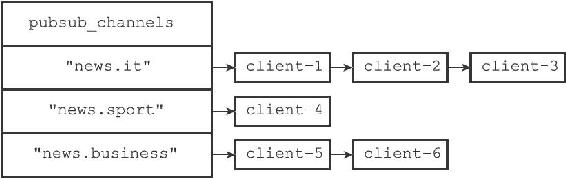
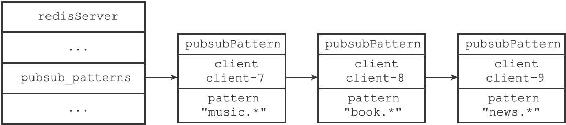

18.3 发送消息
当一个Redis客户端执行PUBLISH
1）将消息message发送给channel频道的所有订阅者。
2）如果有一个或多个模式pattern与频道channel相匹配，那么将消息message发送给pattern模式的订阅者。
接下来的两个小节将分别介绍这两个动作的实现方式。
18.3.1 将消息发送给频道订阅者
因为服务器状态中的pubsub_channels字典记录了所有频道的订阅关系，所以为了将消息发送给channel频道的所有订阅者，PUBLISH命令要做的就是在pubsub_channels字典里找到频道channel的订阅者名单（一个链表），然后将消息发送给名单上的所有客户端。举个例子，假设服务器pubsub_channels字典当前的状态如图18-16所示。

图18-16 pubsub_channels字典
如果这时某个客户端执行命令
PUBLISH "news.it" "hello"
那么PUBLISH命令将在pubsub_channels字典中查找键"news.it"对应的链表值，并通过遍历链表将消息"hello"发送给"news.it"频道的三个订阅者：client-1、client-2和client-3。
PUBLISH命令将消息发送给频道订阅者的方法可以用以下伪代码来描述：
def channel_publish(channel, message):
#
如果channel
键不存在于pubsub_channels
字典中
#
那么说明channel
频道没有任何订阅者
#
程序不做发送动作，直接返回
if channel not in server.pubsub_channels:
return
#
运行到这里，说明channel
频道至少有一个订阅者
#
程序遍历channel
频道的订阅者链表
#
将消息发送给所有订阅者
for subscriber in server.pubsub_channels[channel]:
send_message(subscriber, message)
18.3.2 将消息发送给模式订阅者
因为服务器状态中的pubsub_patterns链表记录了所有模式的订阅关系，所以为了将消息发送给所有与channel频道相匹配的模式的订阅者，PUBLISH命令要做的就是遍历整个pubsub_patterns链表，查找那些与channel频道相匹配的模式，并将消息发送给订阅了这些模式的客户端。
举个例子，假设pubsub_patterns链表的当前状态如图18-17所示。

图18-17 pubsub_patterns链表
如果这时某个客户端执行命令
PUBLISH "news.it" "hello"
那么PUBLISH命令会首先将消息"hello"发送给"news.it"频道的所有订阅者，然后开始在pubsub_patterns链表中查找是否有被订阅的模式与"news.it"频道相匹配，结果发现"news.it"频道和客户端client-9订阅的"news.*"频道匹配，于是命令将消息"hello"发送给客户端client-9。
PUBLISH命令将消息发送给模式订阅者的方法可以用以下伪代码来描述：
def pattern_publish(channel, message):
#
遍历所有模式订阅消息
for pubsubPattern in server.pubsub_patterns:
#
如果频道和模式相匹配
if match(channel, pubsubPattern.pattern):
#
那么将消息发送给订阅该模式的客户端
send_message(pubsubPattern.client, message)
最后，PUBLISH命令的实现可以用以下伪代码来描述：
def publish(channel, message):
#
将消息发送给channel
频道的所有订阅者
channel_publish(channel, message)
#
将消息发送给所有和channel
频道相匹配的模式的订阅者
pattern_publish(channel, message)